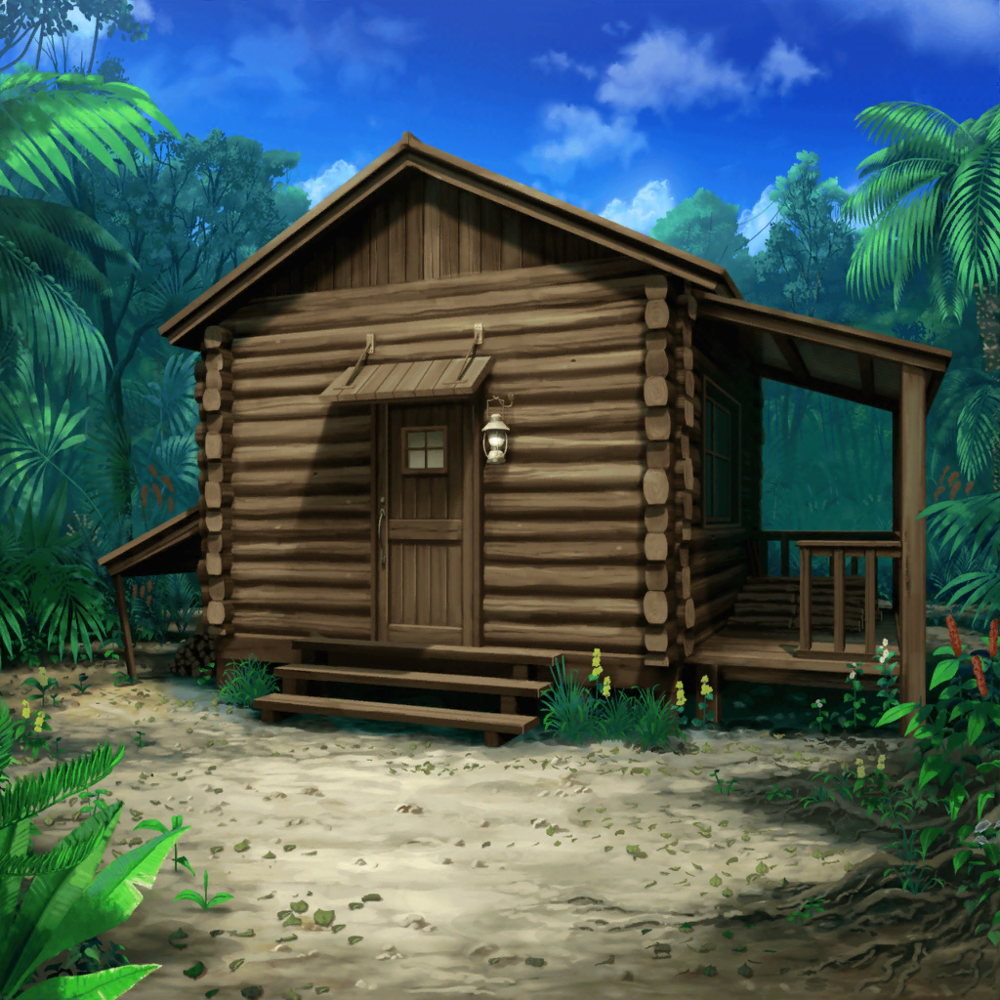

無人島 小屋の中
日菜
二人ともたっだいまー！
食料、いっぱい集めてきたよー！
イヴ
アヤさん、チサトさん見てください！
美味しそうな果物をこんなに見つけましたよ！
千聖
ああ……おかえりなさい、みんな。
無事で本当によかったわ
彩
うん、本当によかった……
麻弥
お二人とも、何かあったんですか？
ずいぶんお疲れの様子ですけど……
千聖
大丈夫、何でもないわ
麻弥
そ、そうですか。
なら、いいんですけど……
千聖
それより、みんなは大丈夫だったかしら。
帰る時、迷わなかった？
イヴ
それが、マヤさんのおかげで
全然迷わないで帰ってこれたんです！
日菜
うん！ 麻弥ちゃん大活躍だったんだよ！
麻弥
そ、そんなに褒めないでくださいっ。
別に大したことをしたわけでは……
彩
わあ、聞きた～い！
麻弥ちゃんがどんな活躍したのか教えて！
千聖
私も気になるわ。
でも、みんな、戻ってきたばかりで疲れてるでしょ？
お話は採ってきてもらった果物を食べながらにしましょうか？
イヴ
そうですね！ ご飯にしましょう！
腹が減っては戦はできぬ、と言いますから！
麻弥
あ、あはは……ちょっと、恥ずかしいですね……
彩
ごちそうさま！
果物、とっても美味しかったね！
麻弥ちゃん、日菜ちゃん、イヴちゃん、本当にありがとう！
麻弥
いえいえ！ お役に立ててよかったです！
次のミッションもこんな感じで進められたらいいんですけど……
イヴ
あ、スタッフさんが来ます！
スタッフ
みなさん、第１ミッションクリア、おめでとうございます。
それでは続いて、次のミッションを発表します
スタッフ
次の内容は……
『この島にある、幻の花畑を探せ！』です！
彩
幻のお花畑？
う、うーん……どこにあるんだろう？
この島、結構広いし、見つかるのかな？
日菜
はーい！
何かヒントくださーい！
スタッフ
そうですね……
では、第１ミッションをクリアしたご褒美に１つだけ。
方角はこの小屋から見て南です
麻弥
南……
千聖
まずは自分達で、
方角を把握しなくちゃいけないわね
日菜
あたしはあっちが南だと思うな！
勘だけど！
千聖
日菜ちゃんの勘は信用してるけど、
ここで方角を間違えたら時間もロスするし、遭難の危険もあるわ。
慎重に考えましょう
麻弥
……とりあえず１度外に出てみましょうか
何か手がかりになるものがあるかも知れませんし

無人島 森の中
彩
えっと、確か日が昇ってくる方が東だったっけ？
あ、でも、時間もわからないし、太陽、真上にあるし、
昇ってきた方角なんてわからないか……
イヴ
マヤさん！ 何かいいアイディアはありませんか？
麻弥
一応収録前に腕時計で方角を確認する方法を
調べてみたんですけど……
千聖
肝心の腕時計がないわね……
麻弥
はい、時計も持ち込みアイテム扱いなのは予想外でした……
日菜
うーん……木に南！ とか西！
とか書いてあれば簡単だったのになー
麻弥
……ん？ 木に南？
木で……南を知る……？
…………あ！
彩
ま、麻弥ちゃん？
急に座り込んでどうしたの……？
麻弥
いえ、木の根元を確認したくて……
千聖
根元を？
コケくらいしか生えていないと思うけれど……
麻弥
はい。そのコケを探してまして……
木の根元にコケがたくさん生えているということは、
そこには陽が射し込まないってことじゃないですか？
麻弥
日が射し込まないってことは、
つまり、そっちの方角がおそらく北だってことです
麻弥
ただ、１本や２本だと偶然かもしれないので、
みなさんにもコケを探すのを協力してもらえれば、
より方角は絞り込めると思います
４人
……
麻弥
み、みなさん、どうしましたか？
ジブン、何かヘンなことを……
彩
す……すごいよ！ 麻弥ちゃん！
麻弥
え……？
千聖
ええ、本当に。
私だったら、そんな方法は絶対思いつけなかったわ
イヴ
さすがパスパレのサバイバルマスターです！
これぞ達人の域！ というやつですね！
麻弥
そ、そんな大したことでは……
日菜
よーし、
それじゃあ早速、麻弥ちゃんに言われた通り、
みんなでコケを探そー！
彩
この辺りの木は、だいたいチェックが終わったね！
麻弥
みなさんのおかげで、早く終わりました！
ありがとうございます！
日菜
それで南はどっちだかわかったのー？
麻弥
はい。みなさんが調べてくれたコケの情報を参考にすると……
こっちが南のはずです！
千聖
（スタッフさん達が動揺しているわね。
本当にこっちが南で正解みたいね）
日菜
麻弥ちゃんって、ホントにすっごいねー。
あたし、何かを覚えたりするのは得意だけど、
地図とか全然読めないからなー
千聖
ふふ、本当にね。
麻弥ちゃんがいてくれてよかったわ♪
千聖
（ただ、スムーズにいきすぎて、
テレビ的にはちょっと心配だけど……
でもルールは破ってないし、そこまで気にしなくていいわよね♪）